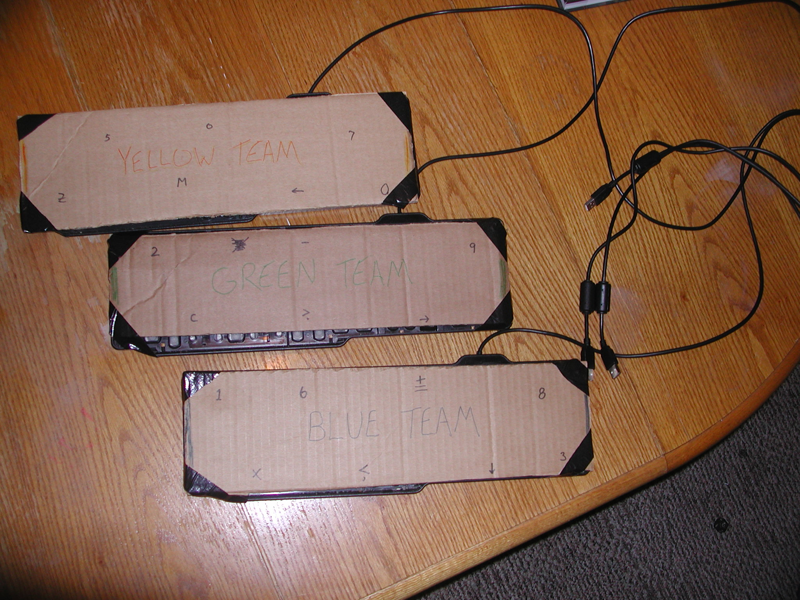

Knowledge Bowl Buzzer Code
Here is the completely free source code for a little program I made for Knowledge Bowl type quiz games. You'll need a few things:
- A computer with MS Windows that can run Python 3.1.2, with at least as many keyboards as teams
(I haven't tried it on Linux or Mac yet, but if it doesn't work there I'll be happy to make sure it does after the first request)
- Install Python 3.1.2
(I'm planning to make this compatible with all major versions of Python)
- Download and use my small program: KnowledgeBowlBuzzer.py (right click and use "save link as" to download). You can also peruse the code online. Also, open the program in a text processor (like Word Pad on Windows) to get more information or modify the code.
(If you're an actual programmer please forgive my code as I know how newbish and messy it is. I would like to rewrite it into object oriented and do some other things, but for now it seems to work)
Additionally, to make the setup work you'll have to assemble (disassemble) three keyboard buzzers. This mostly involves popping off keys and overlaying some stiff material so that when any of the buzzers is pressed it will hit a unique button for that keyboard (that means if one pushes "4" the other two buzzers have to have this key popped off). You can see a picture of our keyboards below. Note that you'll probably have to modify lines 105-107 to fit your specific keyboards. Also, if you want to set a different time limit than 15 seconds, that's on line 68.
Cheers,
H. Ryan Jones
ALSO, much thanks to James L. Sutter for the "aha!" idea that made it possible and "Gentleman" Jon Keith for being the impetus and Grand Bowl Administrator Extraordinaire.
